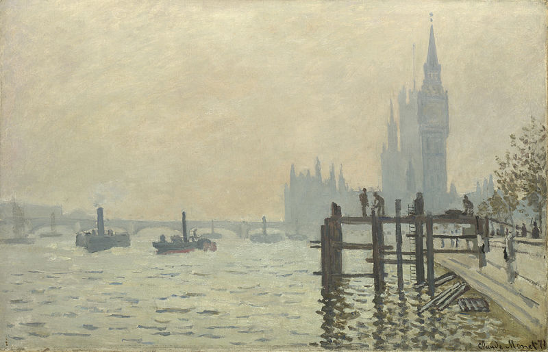

Urban delta's
Waarom zijn steden in de buurt van water vaak meer ontwikkeld? Hiervoor moeten we terugkijken naar wat er in de laatste eeuwen is gebeurd. Transport via water was vroeger erg aantrekkelijk. Over het algemeen is het sneller dan transport over land en ook nog eens goedkoper omdat je alleen een boot en een ligplaats nodig hebt. Voor transport over land heb je wegen of treinsporen nodig, die relatief duur zijn om aan te leggen. Daarnaast is het goed voor de economie van een stad, om handel te drijven met andere steden die aan het water liggen. Hierdoor trekken er mensen naar de stad en ontstaat er ook een grotere mix van culturen, wat ook weer zijn voordelen heeft.
Een ander belangrijk aspect van steden aan water, is dat er vrijwel altijd genoeg voedsel te vinden is. Rivieren, meren en de zee zijn namelijk goede bronnen voor visserij. En zodra dit gecombineerd wordt met landbouw, heeft een stad een degelijke voedselvoorziening. Daarnaast moet een stad zijn inwoners ook kunnen voorzien van schoon drinkwater. Maar in economisch ontwikkelde en handeldrijvende steden was dit zelden een probleem. De steden aan water waren over het algemeen ook schoon, omdat het water als riool kon dienen.
De mens leeft om deze redenen dus al duizenden jaren in de buurt van water. Zelfs in de tijd waarin we nu leven, wat te zien is aan het feit dat meer dan vijftig procent van de wereldbevolking op minder dan drie kilometer afstand van water leeft. En maar tien procent leeft verder dan tien kilometer van water af. Ook bevinden maar liefst driekwart van de ‘mega’ steden zich in de buurt van water.
Een groot nadeel van een stedelijk gebied in de buurt van water, is dat het een aantal gevaren met zich meebrengt. Een voorbeeld hiervan is dat door klimaatverandering de zeespiegel aan het stijgen is. Dit betekent dat dat rivieren moeilijker hun water kwijt kunnen. Daarnaast kan de toenemende onvoorspelbaarheid van het klimaat voor extreem veel regenval zorgen waardoor piekafvoeren van rivieren groter worden. Ook door verstening in stedelijke gebieden wordt het steeds lastiger om met zware regenval, steden te behoeden voor overstromingen. Groeiende steden hebben ook steeds meer behoefte aan schoon drinkwater, wat ook een actueel probleem is in de meeste stedelijke delta’s. Het is een grote opgave om met deze gevaren te leren leven. Maar gelukkig drijft ons overlevingsinstinct ons, om hard te werken aan het vinden van oplossingen.
Op deze website ligt de nadruk op twee stedelijke gebieden die aan water liggen, zogeheten urban delta’s. De twee gebieden betreffen de lagune van Venetië en het estuarium van Taag. Dus wacht niet langer en lees je in.
De locatie van de twee urban delta's
Hieronder is in een kaart de locatie van de twee urban delta's te zien.